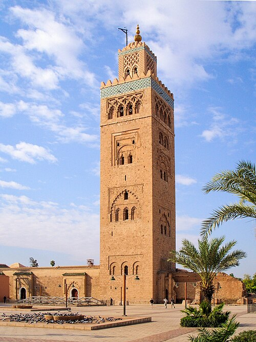

L'histoire du Maroc et de son territoire débute lors des premiers peuplement du Paléolithique inférieur dont les plus anciennes traces sont identifiées à Djebel Irhoud. Il est marqué durant l'Antiquité par des influences phéniciennes puis carthaginoises qui soutiennent l'émergences de royaumes berbères comme le royaume de Maurétanie. Annexé à l'Empire romain et devenant la Maurétanie tingitane, le territoire est envahi par les Vandales et le royaume des Maures et des Romains est formé, avant que le territoire ne se disloque en plusieurs groupes en conflits.
Au début du VIIe siècle, les Arabes musulmans conquièrent le Maghreb et introduisent l'islam et la langue arabe. Plusieurs dynasties musulmanes se succèdent, notamment les Almoravides, les Almohades, les Mérinides, les Wattassides et les Saadiens, qui étendent leur influence sur une grande partie de l'Afrique du Nord et de l'Espagne. Le Maroc devient un centre culturel et religieux important durant cette période.
À partir du XVIe siècle, le Maroc fait face à des incursions européennes, notamment portugaises et espagnoles, qui établissent des comptoirs le long de la côte. Cependant, les dynasties locales parviennent à maintenir leur souveraineté. Au XIXe siècle, le Maroc est confronté à la pression coloniale européenne, ce qui conduit à l'établissement du protectorat français en 1912, bien que le Maroc conserve une certaine autonomie sous le sultanat.
Le Maroc obtient son indépendance en 1956 et devient une monarchie constitutionnelle sous le règne du roi Mohammed V. Depuis lors, le pays a connu des réformes politiques et économiques, tout en préservant son riche patrimoine culturel et historique.
Aujourd'hui, le Maroc est reconnu pour sa diversité culturelle, son architecture impressionnante et ses traditions vivantes, attirant des millions de visiteurs chaque année désireux de découvrir son histoire fascinante.
Les Matériaux de Construction Traditionnels
Le Maroc, riche de son histoire et de sa diversité culturelle, a développé au fil des siècles une architecture unique qui reflète son patrimoine. Les matériaux de construction traditionnels utilisés dans les bâtiments marocains sont variés et adaptés aux conditions climatiques locales. Parmi les matériaux les plus couramment utilisés, on trouve la pierre, le bois, l'argile, le pisé et le tadelakt.
La pierre est un matériau de construction durable et résistant, souvent utilisée pour les fondations et les murs porteurs des bâtiments. Le bois, quant à lui, est employé pour les charpentes, les portes et les fenêtres, apportant une touche esthétique grâce à ses sculptures élaborées.
L'argile est un matériau abondant au Maroc, utilisé pour fabriquer des briques et des tuiles. Le pisé, une technique de construction en terre battue, est également très répandue dans les régions rurales. Il permet de créer des murs épais qui offrent une bonne isolation thermique.
Le tadelakt est une technique de finition à base de chaux et de poudre de marbre, utilisée pour enduire les murs intérieurs et extérieurs. Il confère aux surfaces une apparence lisse et brillante tout en étant imperméable.
Ces matériaux traditionnels témoignent du savoir-faire artisanal marocain et contribuent à la beauté et à la durabilité des bâtiments historiques du pays.
Des Monuments Incontournables
1. La Koutoubia (Marrakech)
La mosquée Koutoubia (arabe : الكتبية ; en tachelhit : ⵜⴰⴽⵯⵜⴱⵉⵜ[1],[2]) est un édifice religieux construit au XIIe siècle à Marrakech, Maroc. Elle est la plus grande mosquée de la ville. Son architecture et son décor ascétique reflètent l'art des Almohades.
Une première mosquée fut commandée en 1148 par le sultan Almohade Abdelmoumen après avoir conquis Marrakech. Une deuxième version de taille semblable sera construite vers 1158 après démolition de la première version.
La mosquée est célèbre pour son minaret de 77 mètres de haut, orné de motifs géométriques et de merlons, qui a servi de modèle pour la Giralda de Séville et la Tour Hassan de Rabat.

2. La Tour Hassan (Rabat)
Le sultan Yacoub El Mansour de la dynastie des Almohades projetait de construire la plus grande mosquée du monde musulman, après celle de Samarra en Irak.
On ignore beaucoup de choses de cette œuvre gigantesque à commencer par son nom dont on ne connaît pas l'origine : nom du lieu, nom d'une tribu ou nom du maître d’œuvre. Pour certains historiens du XVIIIe siècle, notamment espagnols, l'architecte serait un dénommé Jabir ibn Aflah, latinisé au XVIe siècle sous le nom de Guever, Sévillan mort vers l'an 1197 qui aurait conçu à l'identique la Giralda de Séville, la Koutoubia de Marrakech et le minaret de la mosquée Hassan de Rabat. Cette hypothèse n'a jamais été confirmée. Pour la grande majorité des historiens, l'architecte Ahmad Ben Baso, concepteur de la mosquée Koutoubia et de la Giralda de Séville, sous le même modèle, est aussi l'architecte de la tour Hassan. Une tierce hypothèse plus logique retient la coopération de plusieurs architectes dont les plus éminents sont Ahmad Ben Baso et Jabir Ibn Aflah. La seule certitude historique est la date de début des travaux, 1196, et le nom du commanditaire.
Les travaux furent abandonnés après la mort du sultan Yacoub El Mansour, en 1199. Le minaret devait culminer à plus de 60 m, mais n'atteignit que 44,3 m. La mosquée Hassâne ou Hassan fut donc improprement appelée tour Hassan.
La colonnade de l'édifice fut endommagée lors du tremblement de terre de Lisbonne de 1755, qui détruisit entièrement le dôme de la tour.
3. Site de Volubilis (Meknès)
Volubilis (en berbère : ⵡⴰⵍⵉⵍⵉ, Walili - en arabe : وَلِيلِي Walīlī) est le vestige d'une ville romaine construite sur l'ancien site d'une ville punico-berbère, qui fut capitale du royaume de Maurétanie, située sur le plateau de Volubilis dans la plaine du Saïss, dans le Nord marocain, sur les bords de l'oued Rhoumane, rivière de la banlieue de Meknès, non loin de la ville de Moulay Driss Zerhoun.
Partiellement découverte de nos jours, la cité antique éclôt à partir du IIIe siècle av. J.-C. en tant qu'établissement punique et se développe rapidement à partir du moment où elle entre dans le giron romain, pour dépasser une superficie de 42 hectares.
La parure monumentale de la ville se développe particulièrement au IIe siècle, à la suite de l'enrichissement économique de la région. Située dans une région aux riches potentialités agricoles, cette ville vivait du commerce de l'huile d'olive. En effet dans ses ruines de nombreux pressoirs à huile sont présents. Cet enrichissement se traduit également dans l'architecture privée par la construction de vastes villas pourvues de belles mosaïques, la cité apparaissant comme « un centre de rayonnement de la civilisation romaine en Maurétanie Tingitane » selon Brahmi.
La région, jugée indéfendable, est abandonnée par les autorités impériales romaines en 285. La ville, communauté urbaine christianisée, puis cité musulmane, continue d'être habitée pendant sept siècles. La dynastie idrisside y est fondée au VIIIe siècle. Au XIe siècle, le site est abandonné et la population est transférée à 5 km de là, vers la cité de Moulay Driss Zerhoun. La ville ne subit pas de dégradations importantes semble-t-il jusqu'à un tremblement de terre au milieu du XVIIIe siècle. Par la suite, les ruines sont utilisées comme carrière, en particulier pour les constructions de Meknès.
Identifié plus tardivement au XIXe siècle, le site fait partie du patrimoine protégé du Maroc depuis 1921. Le site fait l'objet de fouilles archéologiques depuis le début du XXe siècle et la moitié seulement en est dégagée à ce jour. La qualité des trouvailles et du site a abouti à son classement sur la liste du patrimoine mondial par l'UNESCO. « Exemple éminent d'un ensemble architectural illustrant l'organisation de l'administration punique, pré-romaine et romaine en Afrique, [Volubilis] est aussi le lieu de permanence des sociétés qui ont habité le Maghreb extrême » selon Limane, Rebuffat et Drocourt.
4. Médersa Bou Inania (Fès)
La Médersa Bou 'Inania (arabe المدرسة أبو عنانية بفاس) est une médersa édifiée à Fès, au Maroc, entre 1350 et 1355 pour le sultan Abou 'Inan Faris (r. 1348 - 59), soit sous la dynastie des Mérinides. Elle est la seule médersa de la ville avec celle des Seffarin à avoir un minaret, et elle jouxtait aussi des boutiques permettant son financement, ainsi que de vastes latrines, qui témoignent de son caractère public. En effet, la médersa fonctionnait aussi bien comme une école que comme mosquée du vendredi.
Cette médersa est ouverte aux non-musulmans, comme la plupart des médersas médiévales au Maroc, telles son homonyme de Meknès, ou la médersa Ben Youssef à Marrakech, ou celles Al 'Attarin ou As Saffarin de Fès.
5. Palais de la Bahia (Marrakech)
Le palais de la Bahia (قصر الباهية, en arabe, ⵜⴰⴳⴰⴷⵉⵔⵜ ⵏ ⵍⴱⴰⵀⵢⴰ, en berbère, Bāhiya, la belle, la brillante) est un ancien palais du XIXe siècle de huit hectares de style mauresque / islamique, à Marrakech au Maroc. Actuel musée, il est un des chefs-d'œuvre de l'architecture marocaine et de l'art marocain, un des monuments majeurs du patrimoine culturel du pays, et un des principaux lieux de tourisme au Maroc.
Construit à la fin du XIXe siècle par Si Moussa, grand vizir du sultan Hassan Ier, puis agrandi par son fils, le grand vizir Bou Ahmed, le palais de la Bahia devait être la plus belle des résidences de son époque. Il était destiné à abriter la femme favorite de Bou Ahmed ainsi que ses nombreuses concubines. Le palais comprend plus de 150 pièces réparties autour de vastes cours et jardins luxuriants ornés de fontaines et d'orangers.
Le palais de la Bahia est célèbre pour son architecture raffinée, ses plafonds en bois sculpté, ses zelliges colorés, ses stucs finement travaillés et ses jardins paisibles. Il reflète le savoir-faire artisanal marocain et l'influence de l'architecture andalouse. Aujourd'hui, le palais est ouvert au public en tant que musée, permettant aux visiteurs de découvrir son histoire fascinante et son architecture impressionnante.
6. Mosquée Hassan II (Casablanca)
La mosquée Hassan-II (arabe : مسجد الحسن الثاني) est une grande mosquée située à Casablanca (Maroc). Érigée en partie sur la mer, elle est un complexe religieux et culturel, aménagée sur neuf hectares et comporte une salle de prières, une salle d'ablutions, des bains, une école coranique (madrasa), une bibliothèque, un musée[1], et une Académie des arts traditionnels[2].
Autrefois gratuit, l'accès à l'esplanade de la mosquée Hassan II coûte 120 dirhams depuis novembre 2024
Elle est construite sous le règne et les directives du roi Hassan II. Planifiée sur le site de l'ancienne piscine municipale, sa construction a débuté le 12 juillet 1986 et son inauguration a eu lieu le 30 août 1993, après sept ans de travaux[1].
Étant donné que la mosquée se trouve au bord de l'océan Atlantique, les fondations ont nécessité 26 000 m3 de béton et 60 000 m3 d'enrochement afin de lutter contre les effets de la houle. Cependant, la stabilité des ouvrages de protection à la mer s'est révélée insuffisante et d'importants travaux de renforcement de l'endiguement sont en cours depuis octobre 2006. Soumise à de très fortes contraintes climatiques (houle, humidité, embruns), la mosquée Hassan-II a, en dépit d'un entretien constant, accusé des signes de vieillissement précoce dès 1998 (fissures, chute de panneaux de coffrage), a constaté l'Associated Press[réf. nécessaire]. La mosquée a été financée par l'État, une souscription nationale et divers financements d'accompagnement étrangers dont 80 millions de francs français. Le coût de la construction à la fin des travaux était de 3,8 milliards de dirhams[4].
Cet ouvrage exceptionnel, souvent critiqué lors de sa réalisation, a permis de relancer l'artisanat marocain sous toutes ses formes mais a également été à l'origine du "béton à hautes performances" pour assurer la surélévation du minaret de 175 à 210 mètres. Gérée jusqu'en 2009 par l'Agence urbaine de Casablanca, elle dépend actuellement de la Fondation de la mosquée Hassan-II de Casablanca
7. Mausolée Mohammed V (Rabat)
Le mausolée Mohammed V (en arabe : ضريح محمد الخامس) est un monument situé à Rabat, la capitale du Maroc. Il abrite les tombes du roi Mohammed V, qui a régné de 1927 à 1961 et est considéré comme le père de l'indépendance marocaine, ainsi que celles de ses fils, le roi Hassan II et le prince Abdallah.
Construit entre 1961 et 1971, le mausolée est un exemple remarquable de l'architecture marocaine traditionnelle, avec des éléments inspirés de l'art islamique et andalou. Le bâtiment est orné de zelliges (carreaux de faïence), de stucs sculptés et de bois ciselé, reflétant le savoir-faire artisanal marocain.
Le mausolée est situé sur la place du Mechouar, à proximité de la tour Hassan, un minaret inachevé datant du XIIe siècle. Le site est un lieu de pèlerinage pour les Marocains et attire également de nombreux touristes qui viennent admirer son architecture et rendre hommage au roi Mohammed V et à sa famille royale.
8.Kasbah de Chefchaouen
La kasbah de Chefchaouen est un ensemble architectural et urbain datant du XIXe siècle, situé dans la ville de Chefchaouen au Maroc. Elle est construite sur une colline rocheuse et présente un style architectural caractéristique de l'architecture marocaine traditionnelle, avec des murs en pierre et des structures en bois. La kasbah est entourée de jardins et d'espaces verts qui offrent un cadre pittoresque. Elle est un symbole important de l'identité culturelle de la ville et attire les visiteurs par son architecture authentique et son environnement naturel.
9. Jardin Majorelle (Marrakech)
Le Jardin Majorelle est un jardin botanique et artistique situé à Marrakech, au Maroc. Créé par le peintre français Jacques Majorelle dans les années 1920, le jardin est célèbre pour sa végétation luxuriante, ses couleurs vives et son architecture unique. Il abrite une grande variété de plantes exotiques, notamment des cactus, des palmiers et des bambous, ainsi que des fontaines et des bassins qui ajoutent à son charme. Le jardin a été restauré dans les années 1980 par le couturier Yves Saint Laurent et son partenaire Pierre Bergé, qui ont également créé le musée Yves Saint Laurent à proximité. Le Jardin Majorelle est aujourd'hui l'une des attractions touristiques les plus populaires de Marrakech, attirant des visiteurs du monde entier pour admirer sa beauté et son ambiance paisible.
10. Palais El Badi (Marrakech)
Le Palais El Badi est un palais historique situé à Marrakech, au Maroc. Construit au XVIe siècle par le sultan saadien Ahmed al-Mansur, le palais était autrefois un symbole de la richesse et du pouvoir de la dynastie saadienne. Bien que le palais soit aujourd'hui en ruines, il reste un site impressionnant avec ses vastes cours, ses jardins luxuriants et ses vestiges architecturaux. Le palais est célèbre pour son utilisation de matériaux précieux tels que l'onyx, le marbre et l'or, ainsi que pour ses décorations élaborées. Le Palais El Badi est un lieu populaire pour les visiteurs qui souhaitent découvrir l'histoire et l'architecture du Maroc.
11. Mosquée et minaret de la Kasbah (Marrakech)
La mosquée et le minaret de la Kasbah sont des monuments historiques situés dans la ville de Marrakech, au Maroc. La mosquée, construite au XIIe siècle, est un exemple remarquable de l'architecture islamique avec ses arches en fer à cheval, ses colonnes sculptées et ses décorations géométriques. Le minaret, qui s'élève à une hauteur impressionnante, est un symbole emblématique de la ville et offre une vue panoramique sur Marrakech depuis son sommet. La mosquée et le minaret de la Kasbah sont des lieux de culte importants pour les habitants de Marrakech et attirent également de nombreux visiteurs qui souhaitent découvrir l'histoire et la culture de la région.
12. Palais Royal de Fès (Fès)
Le Palais Royal de Fès, également connu sous le nom de Dar el-Makhzen, est un palais historique situé dans la ville de Fès, au Maroc. Construit au XIVe siècle, le palais est un exemple remarquable de l'architecture marocaine avec ses jardins luxuriants, ses cours intérieures et ses décorations élaborées. Le palais est la résidence officielle du roi du Maroc lorsqu'il visite Fès et est également utilisé pour des cérémonies officielles et des réceptions. Bien que le palais ne soit pas ouvert au public, les visiteurs peuvent admirer son architecture impressionnante depuis l'extérieur et découvrir l'histoire et la culture de la ville de Fès.
13. Mosquée Al Quaraouiyine (Fès)
La mosquée Al Quaraouiyine est une mosquée historique située dans la ville de Fès, au Maroc. Fondée en 859 par Fatima al-Fihri, elle est considérée comme l'une des plus anciennes universités du monde encore en activité. La mosquée est un exemple remarquable de l'architecture islamique avec ses arches en fer à cheval, ses colonnes sculptées et ses décorations géométriques. La mosquée Al Quaraouiyine est un lieu de culte important pour les habitants de Fès et attire également de nombreux visiteurs qui souhaitent découvrir l'histoire et la culture de la région.
14. Tombeaux Saadiens (Marrakech)
Les Tombeaux Saadiens sont un site historique situé dans la ville de Marrakech, au Maroc. Découverts en 1917, ces tombeaux datent du XVIe siècle et abritent les sépultures de membres de la dynastie saadienne, notamment le sultan Ahmed al-Mansur et ses proches. Le site est un exemple remarquable de l'architecture islamique avec ses décorations élaborées, ses mosaïques colorées et ses jardins paisibles. Les Tombeaux Saadiens sont un lieu de visite populaire pour les touristes qui souhaitent découvrir l'histoire et la culture de Marrakech.
15. Médersa Ben Youssef (Marrakech)
La Médersa Ben Youssef est une médersa historique située dans la ville de Marrakech, au Maroc. Fondée au XIVe siècle par le sultan Abou al-Hassan, elle est l'une des plus grandes et des plus anciennes médersas du pays. La médersa est un exemple remarquable de l'architecture islamique avec ses arches en fer à cheval, ses colonnes sculptées et ses décorations géométriques. La Médersa Ben Youssef était autrefois un centre d'enseignement religieux et académique, accueillant des étudiants venus de tout le Maroc et d'ailleurs. Aujourd'hui, la médersa est un lieu de visite populaire pour les touristes qui souhaitent découvrir l'histoire et la culture de Marrakech.
16. Jardin de l'Agdal (Marrakech)
Le Jardin de l'Agdal est un jardin historique situé dans la ville de Marrakech, au Maroc. Créé au XIIe siècle par les Almohades, le jardin est un exemple remarquable de l'architecture paysagère islamique avec ses bassins d'eau, ses vergers et ses oliveraies. Le jardin était autrefois un lieu de détente pour les sultans et leurs cours, offrant un refuge paisible loin de l'agitation de la ville. Aujourd'hui, le Jardin de l'Agdal est un lieu de visite populaire pour les touristes qui souhaitent découvrir l'histoire et la culture de Marrakech tout en profitant de la beauté naturelle du jardin.
17. Musée Dar Si Said (Marrakech)
Le Musée Dar Si Said est un musée d'art et d'artisanat situé dans la ville de Marrakech, au Maroc. Installé dans un palais du XIXe siècle, le musée abrite une collection impressionnante d'objets artisanaux marocains, notamment des tapis, des bijoux, des poteries et des textiles. Le bâtiment lui-même est un exemple remarquable de l'architecture marocaine traditionnelle, avec ses cours intérieures, ses jardins et ses décorations élaborées. Le Musée Dar Si Said offre aux visiteurs une occasion unique de découvrir l'histoire et la culture du Maroc à travers son riche patrimoine artisanal.
18. Mosquée Tin Mal (Tin Mal)
La mosquée Tin Mal est une mosquée historique située dans le village de Tin Mal, au Maroc. Construite au XIIe siècle par les Almohades, la mosquée est un exemple remarquable de l'architecture islamique avec ses arches en fer à cheval, ses colonnes sculptées et ses décorations géométriques. La mosquée Tin Mal est également connue pour son rôle historique en tant que centre religieux et politique pour les Almohades, qui l'ont utilisée comme lieu de prière et de rassemblement pour leurs partisans. Aujourd'hui, la mosquée est un lieu de visite populaire pour les touristes qui souhaitent découvrir l'histoire et la culture de la région.
19. Palais El Mnebhi (Fès)
Le Palais El Mnebhi est un palais historique situé dans la ville de Fès, au Maroc. Construit au XIXe siècle par la famille El Mnebhi, le palais est un exemple remarquable de l'architecture marocaine traditionnelle avec ses cours intérieures, ses jardins et ses décorations élaborées. Le palais était autrefois la résidence de la famille El Mnebhi, qui était l'une des familles les plus influentes de Fès à l'époque. Aujourd'hui, le Palais El Mnebhi est un lieu de visite populaire pour les touristes qui souhaitent découvrir l'histoire et la culture de Fès tout en admirant l'architecture impressionnante du palais.
20. Mosquée Sidi Bou Abid (Casablanca)
La mosquée Sidi Bou Abid est une mosquée historique située dans la ville de Casablanca, au Maroc. Construite au XXe siècle, la mosquée est un exemple remarquable de l'architecture islamique avec ses arches en fer à cheval, ses colonnes sculptées et ses décorations géométriques. La mosquée Sidi Bou Abid est également connue pour son rôle en tant que centre religieux et communautaire pour les habitants de Casablanca. Aujourd'hui, la mosquée est un lieu de visite populaire pour les touristes qui souhaitent découvrir l'histoire et la culture de la région.
21. Médersa Al Attarin (Fès)
La Médersa Al Attarin est une médersa historique située dans la ville de Fès, au Maroc. Fondée au XIVe siècle par le sultan Abou Saïd Uthman II, elle est l'une des plus célèbres médersas de la ville. La médersa est un exemple remarquable de l'architecture islamique avec ses arches en fer à cheval, ses colonnes sculptées et ses décorations géométriques. La Médersa Al Attarin était autrefois un centre d'enseignement religieux et académique, accueillant des étudiants venus de tout le Maroc et d'ailleurs. Aujourd'hui, la médersa est un lieu de visite populaire pour les touristes qui souhaitent découvrir l'histoire et la culture de Fès.


/incontournables/maroc-fes-medersa-bou-inania.jpg)